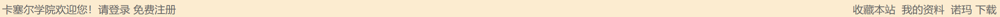
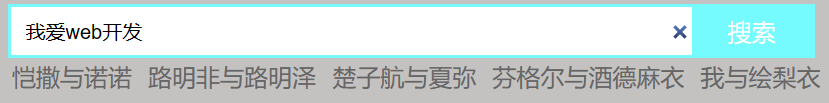
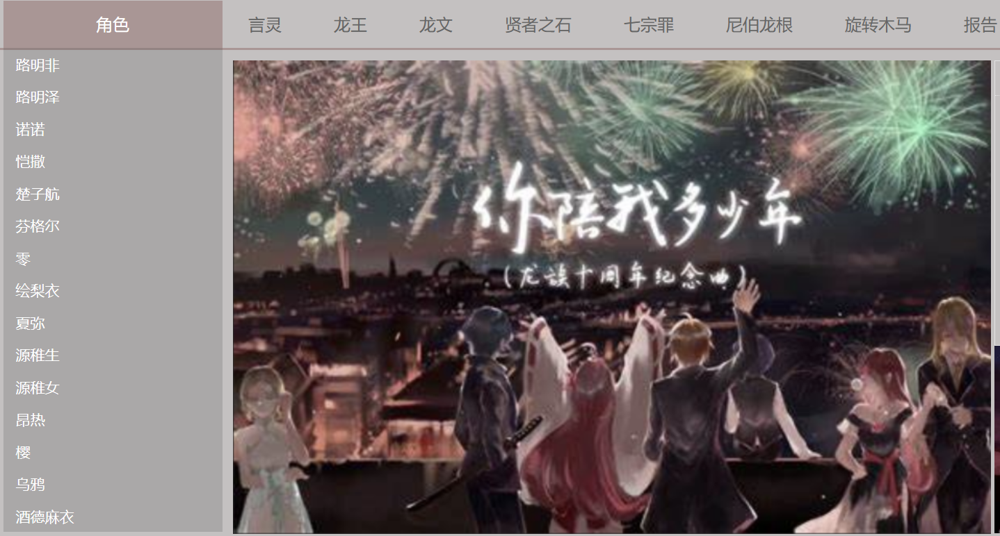
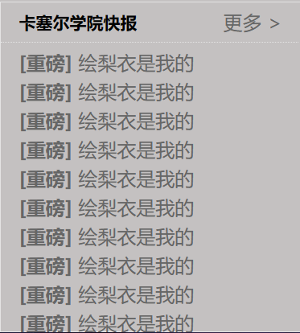
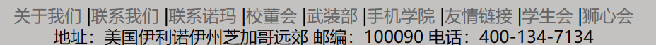
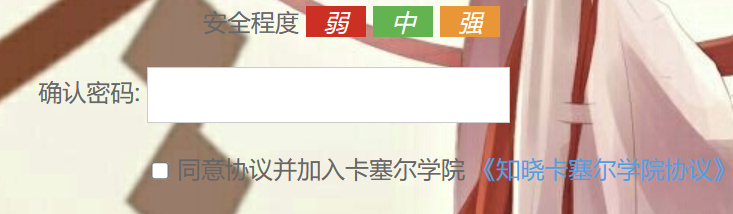
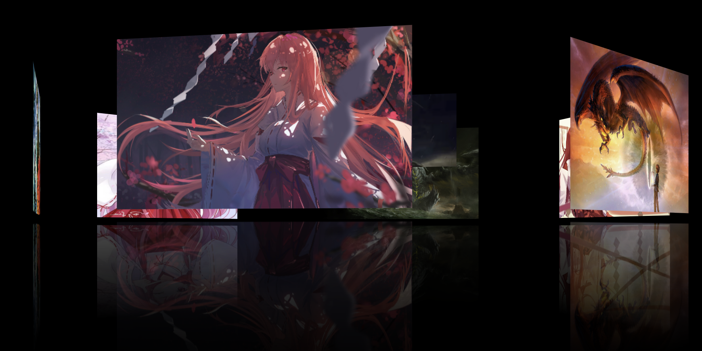

小组成员
- 姓名：周璇
- 学号：0223565
- 班级：软件13班
网站介绍
- 名称：但为君故，沉吟至今
- 主题：小说《龙族》
- 选题目的：《龙族》作为从小学陪伴我成长的小说，你陪了我多少年，花开花落，一路上起起跌跌。
网站设计
-
内容板块：主页面，注册页面，登录页面，旋转木马页面
-
首先找了一个板心，然后在左侧有着登录与注册的链接。

- 其次是主页面的header制作，做了一个search搜索模块，在其中加了语言提示内容，并且在搜素条中的语句可以一键删除，并在搜索条下加入了热词搜索。

再是导航栏与侧边栏的制作。

再是热报消息。

最后则是足页的设计，第一行是链接，第二行则是卡塞尔学院的一些情况。

-
注册用户的页面也有着表格，有关密码安全性程度的提示，可以跳转到登录界面，有着同意
加入卡塞尔学院的协议的框框可以勾选。

-
旋转木马的界面用了3D转换，将子元素开启了3D立体空间，添加了动画效果 ，沿着y轴旋转。
用了linear匀速旋转，并加上infinite无限循环。最后用了animation-play-state:paused;
当鼠标放在图片上则停止旋转。同时还能有着图片的倒影。

遇到的问题
- 因为js课程我们没有学的深入tab栏切换布局卡了挺久的。
- 背景的透明化处理在网上找了很久很久的资料。
- 各种图片乱跑，一直尝试着定位。
- 尝试了很久的2D转换与3D转换，查阅了很多很多资料。
- 网络布局想了好久好久，刚刚才看到可以查阅Bootstrap与jQuery网站的布局，他真的我哭死。
总结
- 对于web前端的学习的话重要的就是多用，很多东西我们上课听得时候其实都基本听得懂，但是更重要的是在于你课后的练习，离开了老师的一个思维引导，我们该怎样去完成项目才是我们该学会的。这一个学期的学习难度系数都不是很高。但却是一个比较繁杂的过程，因为作为前端来说，我们需要不断的优化，不断的修正，美化整个页面。不管是前端还是后端，都希望自己能好好学！
往后也会接着学习web开发的相关知识，也会不断通过联系巩固、提升自己。